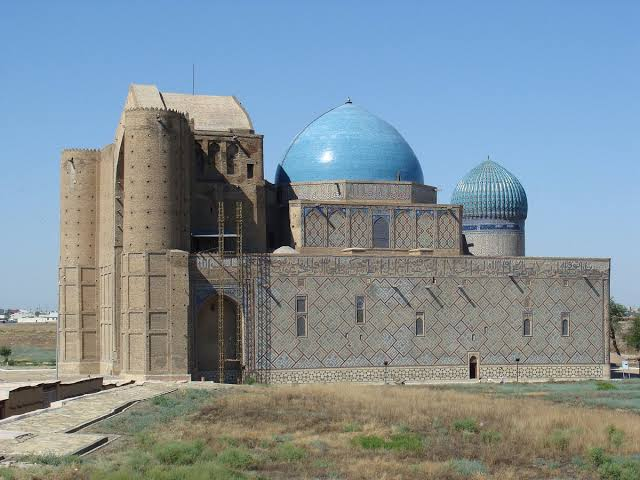

Discover Kazakhstan
Interactive Heritage Map
Explore 20 cultural, historical, and natural places using their approximate geographic locations.
Map tiles © OpenStreetMap contributors. Locations are approximate and intended for educational exploration.

Mausoleum
Mausoleum of Khoja Ahmed Yasawi
Turkistan Region
A major Timurid-era architectural monument in the historic city of Turkistan.
Location details
- Significance
- A landmark of Timurid architecture.
- Interesting fact
- Construction began in 1389.
- Approximate coordinates
- 43.29770, 68.27110
Select a marker to explore another place.
Explore further
More about this place
Optional additional background from Wikipedia.
Select a place to load additional information.
Read the full article